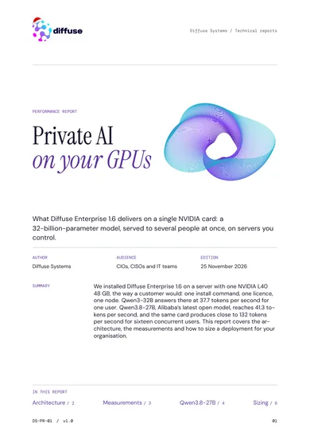

Leistungsbericht · PDF
Private KI auf Ihren GPUs.
Was Diffuse Enterprise 1.6 auf einer einzigen NVIDIA-Karte leistet: ein Modell mit 32 Milliarden Parametern, für mehrere Menschen gleichzeitig, auf Servern unter Ihrer Kontrolle. Architektur, Messungen und die Dimensionierung einer Installation.
Den Bericht herunterladen